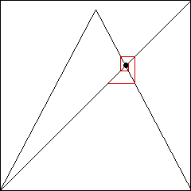
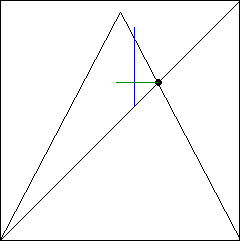

|  |  |
| On the right we see the first few iterates around the unstable fixed point. | |||
| As soon as the iterates exceed a threshold distance from the fixed point, we reapply the control process. | |||
| On the right we find how to change the height of the tent map so graphical iteration will go back to the fixed point. | |||
| |||
| Click either picture to see the tent map adjustment. |